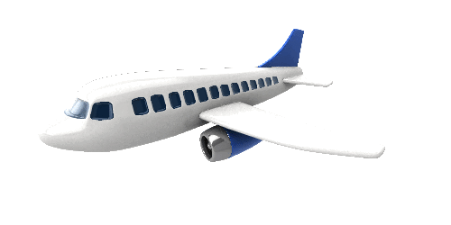
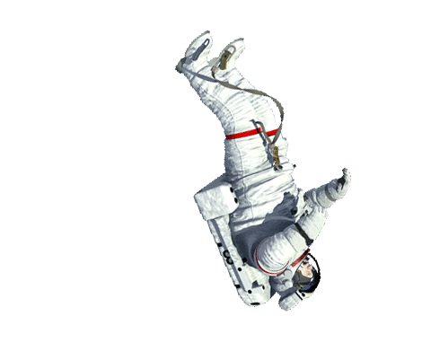

Get ready for a trip to space fisiting all atmosphere layers
There are 5 layer which are trorosphere, Stratosphere, Mesosphere, thermosphere and Exospere. These layers provide protection to the earth.
Keep scrolling for a ride through the layers.
The Troposphere starts at the Earth's surface and extends 8 to 14.5 kilometers high. This part of the atmosphere is the most dense. Almost all weather is in this region. Within the troposphere you will find Earth, Humans (us), animals, clouds and hot air ballons.
Hover over objects to view further information.


| - 14Km |
| - 13Km |
| - 12Km |
| - 11Km |
| - 10Km |
| - 9Km |
| - 8Km |
| - 7Km |
| - 6Km |
| - 5Km |
| - 4Km |
| - 3Km |
| - 2Km |
| - 1Km |
The Stratosphere starting at 17km ending at 50 km consists of the ozone layer. Ozone is created when radiation from the sun splits two-atom oxygen molecules into separate atoms. They combine with other two-atom molecules to form a three-atom molecule. The layer acts as a shield from ultraviolet radiation from the sun. The upper part of the stratosphere warms up to approximately 18°C as the ozone reacts with ultraviolet radiation giving off enough heat to warm this layer. The oxygen has decreased at this layer.
| - 50Km |
| - 47Km |
| - 44Km |
| - 41Km |
| - 38Km |
| - 35Km |
| - 32Km |
| - 29Km |
| - 26Km |
| - 23Km |
| - 20Km |
| - 17Km |
Above the stratosphere is the mesosphere. It extends upward to a height of about 85 km above our planet. Most meteors burn up in the mesosphere. Unlike the stratosphere, temperatures once again grow colder as you rise up through the mesosphere. Due to the cold temperatures meteors burn. The Metosphere is where all meteors burn to protect the earth. However there are chances that a meteor can pass this protection layer and hit earth.
| - 80Km |
| - 75Km |
| - 70Km |
| - 65Km |
| - 60Km |
| - 55Km |
| - 50Km |
High-energy X-rays and UV radiation from the Sun are absorbed in the thermosphere, raising its temperature to hundreds or at times thousands of degrees. However, the air in this layer is so thin that it would feel freezing cold to us!
| - 690Km |
| - 550Km |
| - 450Km |
| - 350Km |
| - 295Km |
| - 185Km |
| - 85Km |
Although some experts consider the thermosphere to be the uppermost layer of our atmosphere, others consider the exosphere to be the actual "final frontier" of Earth's gaseous envelope. Different definitions place the top of the exosphere somewhere between 100,000 km (62,000 miles) and 190,000 km (120,000 miles) above the surface of Earth. The latter value is about halfway to the Moon!
| - ∞ |
| - |
| - |
| - |
| - |
| - |
| - 700 |